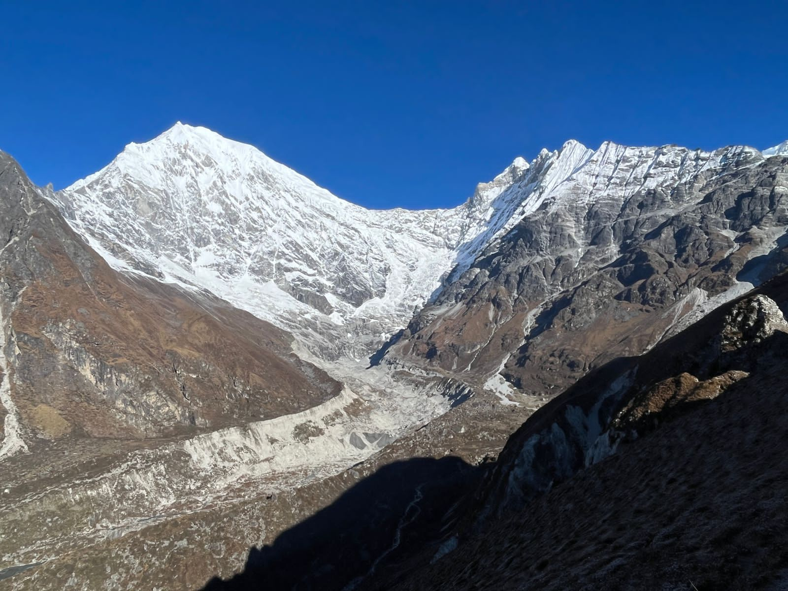
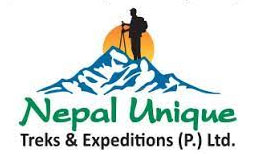

Ganesh Himal Ruby Valley Trek
A trip through an enchantingly beautiful trail, the Ganesh Himal Ruby Valley Trek has you walking in the shadow of several 7,000+ peaks. Sprawled across the lap of Ganesh Himal, it is the epitome of pristine natural beauty, attracting several travelers every year.




Key Trip Facts
Trek Overview
Trip Highlights
Ganesh Himal Ruby Valley Trek Overview
A trip through an enchantingly beautiful trail, the Ganesh Himal Ruby Valley Trek has you walking in the shadow of several 7,000+ peaks. Sprawled across the lap of Ganesh Himal, it is the epitome of pristine natural beauty, attracting several travelers every year.
The Ruby Valley is a newly introduced trekking destination in Nepal, discovered by TAAN (Trekking Agencies Association of Nepal) and the Ganesh Himal Tourism Development Committee. The trekking trail falls on the Langtang trekking route and is set amidst the Manaslu and Langtang region.
Due to its relative remoteness and inaccessibility, the valley has remained intact in terms of culture and natural scenery. You will spend the night at a homestay, as there are no teahouses or lodges. It offers you a close glimpse of local culture and lifestyle. In fact, the accommodation is the best part of the Ruby Valley Trail! The lack of tourism infrastructure means a lack of tourists, and you get a chance to engage with locals authentically and live like a Nepali.
The food on the Ruby Valley trail is decidedly simple, and there are usually two choices: either Daal Bhaat or noodles similar to ramen. If you want protein, ask for eggs, there are always fresh! We suggest you go for Daal Bhaat as it is filling and full of healthy calories.
Apart from cultural discoveries, the trek offers stunning Himalayan vistas – Annapurna, Langtang, Ganesh Himal, and Manaslu. Also, you will get the opportunity to explore Buddhist Monasteries and Hindu Temples, waterfalls, lakes, and forests.
The Ganesh Himal Ruby Valley Trek is one of the hidden gems of Trekking in Nepal, offering an unforgettable journey through remote Himalayan landscapes, authentic local culture, and untouched wilderness. Located between the famous Langtang Valley Treks region and the majestic Ganesh Himal range, this remarkable trail takes trekkers through traditional villages inhabited by Tamang and Gurung communities, dense forests, scenic valleys, terraced fields, and high alpine pastures. Unlike crowded trekking routes, the Ruby Valley Trek offers a peaceful and immersive experience for travelers seeking authentic Hiking in Nepal away from busy tourist trails.
This beautiful adventure is also an excellent option for a Camping Trek in Nepal, allowing trekkers to experience the untouched natural environment and remote mountain lifestyle closely. The route provides spectacular panoramic views of the Ganesh Himal range, Langtang Himal, Manaslu, and surrounding snow-capped peaks. Trekkers can enjoy the incredible scenery while following sections connected to the Ganesh Himal View Trek, Ganesh Himal Base Camp, Ganesh Himal Rupinala Trek, and Ganesh Himal Singla Pass Trek, making it a diverse and rewarding trekking destination.
The Ganesh Himal Ruby Valley region is rich in natural and cultural beauty. Along the route, trekkers can discover natural hot springs, sacred lakes, cascading waterfalls, and the legendary ruby mining area that gives the valley its name. Whether you are looking for adventure, mountain scenery, or cultural exploration, the Ganesh Himal Ruby Valley Trek delivers a unique trekking experience that combines the best of Trekking in Nepal with untouched Himalayan charm.
Best Time to Visit Ganesh Himal Ruby Valley Trek
The best time to visit the Ganesh Himal Ruby Valley Trek is during the spring (March–May) and autumn (September–November) seasons. These periods offer stable weather, clear mountain views, and ideal conditions for Trekking in Nepal and Hiking in Nepal.
Spring (March to May)
Spring is one of the most beautiful times for the Ganesh Himal Ruby Valley Trek. The forests come alive with colorful rhododendron blooms, green hills, and pleasant temperatures. Trekkers can enjoy spectacular views of Ganesh Himal, Langtang, and the surrounding snow-capped peaks. This season is also excellent for a Camping Trek in Nepal, as the weather remains comfortable and nature is vibrant.
Autumn (September to November)
Autumn is considered the peak trekking season in Nepal. After the monsoon rains, the skies become crystal clear, creating outstanding visibility for the Ganesh Himal View Trek and nearby Himalayan landscapes. Mild temperatures and dry trails make trekking safer and more enjoyable.
Winter (December–February)
Winter trekking is possible, but higher elevations near Ganesh Himal Base Camp and Ganesh Himal Singla Pass Trek routes may experience snowfall and colder temperatures.
Monsoon (June–August)
Heavy rainfall can make trails muddy and slippery. However, the valley becomes lush and green, offering a quieter trekking experience for adventurous travelers seeking remote hiking experiences in Nepal.
Difficulty Level of Trek
The Ganesh Himal Ruby Valley Trek difficulty is considered moderate, making it suitable for trekkers with basic fitness and some prior Trekking in Nepal experience. The trail includes daily walks of 5–7 hours through hills, forests, rivers, and traditional villages. Some sections involve steep ascents and descents, especially while crossing high ridges near the Ganesh Himal Singla Pass Trek and viewpoints. Altitude is moderate compared to high Himalayan expeditions, but proper acclimatization is still important. With good preparation, it is a rewarding Hiking in Nepal experience, offering both adventure and comfort for nature and culture lovers.
Ganesh Himal Ruby Valley Trek Itinerary: Day by Day
13 Days program for Ganesh Himal Ruby Valley Trek. Daily timings and sequences remain flexible according to weather, flight operations, and group pace.
Day 1: Arrival in Kathmandu (1,350m)
Approx. 1,345 m / 4,413 ft
Your Ganesh Himal Ruby Valley Trek adventure begins upon arrival at Tribhuvan International Airport, Kathmandu (1,350m). A representative will welcome you and transfer you to your hotel. This day is for rest, trek briefing, and preparation for Trekking in Nepal. You can explore nearby cultural sites in Kathmandu Valley or simply relax after your journey. There is no trekking distance or walking time today, but the focus is on adjusting to the environment and preparing gear for the upcoming Hiking in Nepal experience. Overnight stay at a hotel in Kathmandu.
Day 2: Drive from Kathmandu to Syabrubesi (1,460m), 122 km, 6/7 hrs
Approx. 1,460 m / 4,790 ft
Today, you begin your journey with a scenic drive from Kathmandu to Syabrubesi (1,460m), covering approximately 122 km in 6–7 hours. The road passes through rivers, hills, and rural settlements, offering a beautiful introduction to the Himalayan landscape. Syabrubesi is a gateway for many trekking routes, including nearby Langtang Valley Treks. On arrival, you will explore the village and prepare for trekking. This drive marks the transition from city life to remote mountain adventure, setting the tone for your Ruby Valley Trek experience.
Day 3: Trek from Syabrubesi to Gatlang (2,240m), 12 km, 5/6 hrs,
Approx. 2,240 m / 7,349 ft
The trekking begins today as you walk from Syabrubesi (1,460m) to Gatlang (2,240m), covering around 12 km in 5–6 hours. The trail climbs steadily through forests, suspension bridges, and traditional Tamang villages. You will experience authentic rural life and stunning views of the surrounding hills. Gatlang is a beautiful settlement known for its cultural richness and warm hospitality. This section introduces the real spirit of Trekking in Nepal, blending nature, culture, and adventure in a peaceful Himalayan setting.
Day 4: Trek from Gatlang to Somdang (3,271m), 12 km, 6/7 hrs
Approx. 3,271 m / 10,732 ft
Today’s trek from Gatlang (2,240m) to Somdang (3,271m) takes about 10–12 km and 5–6 hours. The trail passes through dense forests, yak pastures, and remote ridges, offering increasing mountain scenery. As you gain altitude, the air becomes cooler and the views more dramatic. Somdang is a quiet, high-altitude settlement surrounded by natural beauty and mining history. This part of the Ruby Valley Trek feels more remote and adventurous, ideal for trekkers seeking off-the-beaten-path hiking experiences in Nepal.
Day 5: Acclimatization Day at Somdang (3,271m)
Approx. 3,271 m / 10,732 ft
Today is an important acclimatization day at Somdang (3,271m). There is no trekking distance, but short hikes around the area help your body adjust to altitude. You can explore nearby ridges, waterfalls, or old mining sites while enjoying panoramic mountain views. This rest day is crucial for a safe journey ahead in the Ganesh Himal Ruby Valley Trek. It prepares you for higher sections like Pangsang Bhanjyang Pass. Enjoy the peaceful environment and natural beauty of this remote Himalayan location.
Day 6: Trek to Pangsang Bhanjyang Pass (3,850m) & Tipling (2,200m), 16 km, 7/8 hrs
Approx. 3,850 m / 12,631 ft
Today is one of the most challenging and rewarding days. You trek from Somdang (3,271m) to Pangsang Bhanjyang Pass (3,850m) and descend to Tipling (2,200m), covering around 14–16 km in 7–8 hours. The pass offers breathtaking panoramic views of Ganesh Himal, Langtang, and Manaslu ranges. After enjoying the summit scenery, you descend through forests and villages. This section is a highlight of the Ganesh Himal Singla Pass Trek region and showcases the true beauty of high-altitude Hiking in Nepal.
Day 7: Trek from Tipling to Shertung (1,875m), 10 km, 5/6 hrs
Approx. 1,875 m / 6,152 ft
Today’s trek from Tipling (2,200m) to Shertung (1,875m) takes about 10 km in 5–6 hours. The trail descends gradually through terraced fields, forests, and traditional settlements. You will interact with local communities and experience their unique lifestyle and culture. Shertung is a peaceful village surrounded by natural beauty and Himalayan charm. This day offers a relaxing trekking experience compared to higher altitude sections, allowing you to enjoy the cultural richness of the Ruby Valley Trek route.
Day 8: Trek from Shertung to Chalish Gaon (1,675m), 12 km, 6/7 km
Approx. 1,675 m / 5,495 ft
The journey continues from Shertung (1,875m) to Chalish Gaon (1,675m), covering around 12 km in 6–7 hours. The trail passes through beautiful landscapes, rivers, and terraced farmland. Chalish Gaon is known for its cultural homestay experiences and traditional Tamang lifestyle. This section is less physically demanding and provides an immersive cultural experience of Trekking in Nepal. You will enjoy warm local hospitality, making this day one of the most memorable cultural highlights of the Ganesh Himal View Trek region.
Day 9: rek from Chalish Gaon to Jharlang (3,000m), 12 km, 6/7 hrs
Approx. 3,000 m / 9,843 ft
Today you trek from Chalish Gaon (1,675m) to Jharlang (3,000m), covering approximately 10–12 km in 5–6 hours. The trail climbs steadily through forests, hills, and remote villages. As you ascend, mountain views become more prominent. Jharlang is a scenic village offering peaceful surroundings and traditional Himalayan culture. This section of the Ruby Valley Trek provides a balanced mix of nature and adventure, making it a rewarding day for trekkers enjoying hiking in Nepal off the beaten path.
Day 10: Trek from Jharlang to Darkha Gaun (850m), 14 km, 6/7 hrs
Approx. 850 m / 2,789 ft
Today’s descent from Jharlang (3,000m) to Darkha Gaun (850m) takes about 12–14 km in 6–7 hours. The trail goes downhill through forests, rivers, and rural settlements. You will notice a significant change in landscape and climate as you descend. Darkha Gaun is a small village with local charm and a simple lifestyle. This section reflects the diversity of the Ganesh Himal Ruby Valley Trek, transitioning from high mountains to lower hills in a single journey.
Day 11: Trek from Darkha Gaun to Katunje Bazar 1100 m, 16 km,7 hrs
Approx. 1,100 m / 3,609 ft
Today’s journey from Darkha Gaun (850m) to Katunje Bazar (approx. 1,100m) takes around 6–7 hours, covering approximately 14–16 km of scenic trail. The route gradually ascends and passes through terraced farmlands, small rivers, forested sections, and traditional hill settlements, offering a beautiful transition from rural countryside to more developed market areas. This part of the Ganesh Himal Ruby Valley Trek provides an authentic glimpse of local daily life, where you can observe farming activities and interact with friendly villagers along the way. As you approach Katunje Bazar, the landscape becomes more lively with small shops, schools, and local markets, marking a contrast to the remote trekking sections. The trail is less strenuous compared to high-altitude days, making it a comfortable yet culturally rich walking experience in Trekking in Nepal. Katunje Bazar serves as an important stop before heading towards returning to Kathmandu, concluding the lower hill trekking experience of the Ruby Valley Trek with a blend of nature and local culture.
Day 12: Katunje Bazar to Kathmandu 1345 m, by Jeep via Trishuli Bazar 85 km 4/5 hrs
Approx. 1,345 m / 4,413 ft
Today, you leave Katunje Bazar (approx. 1,100–1,300m) and drive back to Kathmandu (1,345m) by private or shared jeep, covering around 85 km in 6–8 hours via the scenic Trishuli Bazar route. The journey follows winding hill roads, river valleys, terraced landscapes, and small roadside settlements, offering a final glimpse of rural life in the Ganesh Himal Ruby Valley Trek region. The drive descends gradually toward the Trishuli River basin before connecting to the main highway leading to Kathmandu. Along the way, you can enjoy views of hills, rivers, suspension bridges, and bustling roadside towns, making the return journey both relaxing and visually engaging. This road is an important travel corridor in Trekking in Nepal, linking remote trekking regions with the capital city. Upon arrival in Kathmandu, you will be transferred to your hotel, marking the successful completion of your Ruby Valley Trek adventure filled with mountains, culture, and unforgettable Himalayan experiences.
Day 13: Final Departure
Approx. 1,345 m / 4,413 ft
Today is your final day in Nepal. After breakfast, you will be transferred to Tribhuvan International Airport (1,345m) for your onward journey. There is no trekking distance or walking time today. You depart with beautiful memories of the Ganesh Himal Ruby Valley Trek, rich cultural experiences, and stunning Himalayan landscapes. This journey through Hiking in Nepal, remote villages, and mountain passes leaves you with lifelong adventure memories and a desire to return to Nepal again.
What is Included (Regular Package)
What is Excluded
Booking Dates & Availability
Packing List for Ganesh Himal Ruby Valley Trek
Essential Info: Down jackets and sleeping bags can be rented/arranged per package inclusions.High-Altitude Trail Gear (6 items)
Cold-Weather Layering System (5 items)
Sleep, Health & Permits (3 items)
Read before you book: Ganesh Himal Ruby Valley Trek
Practical logistics derived directly from this package's route facts, inclusions, and elevation profile.
Accommodation & Meals (Hotel, Lodge & Tea House)
Accommodation follows the package grade (Hotel, Lodge & Tea House) in Kathmandu and along the Langtang route. Check your package Includes section for included meals and Kathmandu hotel nights.
Permits & Local Logistics
Transportation is arranged via Flight & Private Car. Applicable permits listed in the package inclusions are arranged by Nepal Unique Treks prior to departure.
Route Difficulty & Elevation (4,424 m)
Ganesh Himal Ruby Valley Trek is rated Moderate with a maximum elevation of 4,424 m. Follow your guide's pacing and stay hydrated throughout the 13 Days itinerary.
Best Time to Visit (Spring & Autumn)
Recommended operating season on the source page: Spring & Autumn.
Altitude Profile of Ganesh Himal Ruby Valley Trek
Weather on Ganesh Himal Ruby Valley Trek
Ganesh Himal Ruby Valley Trek Route Map

Book This Trek
Contact our Kathmandu coordinators using the booking panel for private or fixed-group departures.
Trip Feedback
Explore verified traveller stories or leave feedback on Nepal Unique Treks.
Visit Nepal Unique Treks